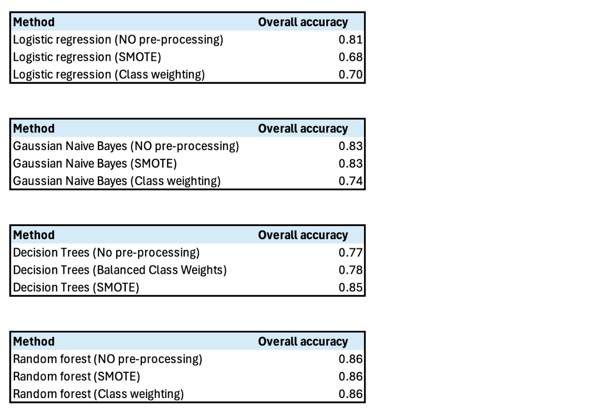

Bank Customer
Churn Prediction
Objectives
Understand Factors Influencing Churn: Analyze demographic, financial, and behavioral data to uncover critical factors contributing to customer churn, such as tenure, balance, and product usage. Build Accurate Predictive Models: Implement machine learning algorithms, including Logistic Regression, Naive Bayes, Decision Trees, and Random Forests, to assess churn likelihood and identify at-risk customers. Design Targeted Retention Strategies: Leverage predictive insights to develop actionable recommendations, such as personalized offers, tailored engagement strategies, and service enhancements, to improve customer satisfaction and loyalty.
Methodology
Preprocessing: Data cleaning, handling missing values, feature scaling, balancing class distribution with SMOTE and class weighting. Modeling: Built and compared four classification models: Evaluation Metrics: Accuracy, Precision, Recall, F1-Score, Confusion Matrix. Comparison: Compare model performance with and without class balancing techniques.
Data Overview
- Data Source
-
The dataset contains 10,002 entries with 12 features, including demographic, account, and transactional attributes. The target variable is Exited, indicating whether a customer churned.
- Data Dictionary
-
Variable Description Customer ID A unique identifier for each customer. Surname The customer's surname or last name. Credit Score A numerical value representing the customer's credit score. Gender The customer's gender (1 = Female, 0 = Male). Age The customer's age. Tenure The number of years the customer has been with the bank. Balance The customer's account balance. NumOfProducts The number of bank products the customer uses (e.g., savings account, credit card) HasCrCard Whether the customer has a credit card (1 = yes, 0 = no) IsActiveMember Whether the customer is an active member (1 = yes, 0 = no). EstimatedSalary The estimated salary of the customer. Exited Whether the customer has churned (1 = yes, 0 = no). - Descriptive Analysis
Modeling & Results
1. Logistic Regression
scaler = StandardScaler()
data['Balance'] = scaler.fit_transform(data[['Balance']])
data['EstimatedSalary'] = scaler.fit_transform(data[['EstimatedSalary']])
X = data[["CreditScore", "Gender", "Age", "Tenure", "Balance", "NumOfProducts", "HasCrCard", "IsActiveMember", "EstimatedSalary"]]
y = data["Exited"]
X_train, X_val, y_train, y_val = train_test_split(X, y, test_size=0.2, random_state=42, stratify=y)
log_reg = LogisticRegression(max_iter=1000, solver='liblinear')
log_reg.fit(X_train, y_train)
From the combined results, Logistic Regression without pre-processing achieves the highest overall accuracy (81%) but struggles with class imbalance, as shown by the poor recall (14%) and F1-score (23%) for the churn class. SMOTE improves balance across classes, with a more consistent F1-score (67%) for both. Class weighting further enhances balance, achieving equal precision, recall, and F1-score (70%) for both churn and no-churn. Depending on the business focus, class weighting offers the best balance, while no pre-processing provides the highest raw accuracy.
2. Naive Bayes
X_train, X_test, y_train, y_test = train_test_split(X, y, test_size=0.2, random_state=42)
naive_bayes_model = GaussianNB()
naive_bayes_model.fit(X_train, y_train)
y_pred = naive_bayes_model.predict(X_test)SMOTE achieves the best balance between the “Churn” and “No-churn” classes, significantly improving recall (0.75) and F1-score (0.75) for the “Churn” class, while maintaining an overall accuracy of 83%. In contrast, the no pre-processing approach performs well for the “No-churn” class (F1-score: 0.90) but struggles with the “Churn” class (F1-score: 0.38). Class weighting provides balanced recall for both classes but at the cost of lower overall accuracy (74%).
3. Decision Trees
X_train, X_test, y_train, y_test = train_test_split(X, y, test_size=0.2, random_state=42)
model = DecisionTreeClassifier(random_state=42)
model.fit(X_train, y_train)
y_pred = model.predict(X_test)The Decision Tree model exhibited varying performance across different configurations. SMOTE demonstrated the best results, achieving the highest recall and F1-score for the minority class while maintaining strong overall accuracy(85%). However, SMOTE led to a slight reduction in accuracy, likely due to overfitting caused by synthetic data. In comparison, balanced class weights showed moderate improvements but were less effective in addressing the imbalance for the minority class.
4. Random Forest
X_train, X_test, y_train, y_test = train_test_split(X, y, test_size=0.2, random_state=42)
rf_model = RandomForestClassifier(random_state=42, n_estimators=100, max_depth=None, class_weight=None)
rf_model.fit(X_train, y_train)
y_pred = rf_model.predict(X_test)All three methods achieved the same overall accuracy of 86%, indicating that they performed similarly in correctly classifying most instances. Combining the data on precision, recall, and F1-score, the performance of the three models is the same, so the bank can choose any one to use under the large model of random forest.
Overall Comparison
Across all methods and models, Random Forest proved to be the most reliable choice. It balanced precision and recall effectively across both classes and demonstrated high overall accuracy, making it ideal for practical application in customer churn prediction scenarios.
Feature Importance
importances = rf_model.feature_importances_
importance_dt = pd.DataFrame({
'Feature': X.columns,
'Importance': importances
}).sort_values(by='Importance', ascending=False)